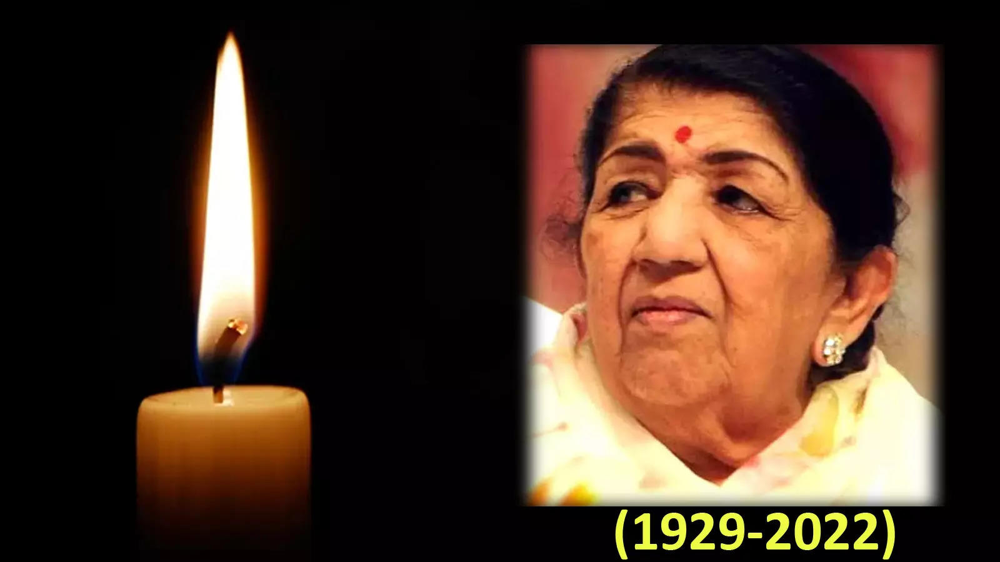

Tribute to the Nightingale of India
Our country lost the Queen of Melody ,Lata Mangeshkar passed away on Sunday after a prolonged hospitalisation due to Covid-19 and pneumonia.

Lata Mangeshkar was known as "Nightingale of India" of our nation for her melodies voice, Across her 8 decades in music, she sang over 30,000 songs in as many as 36 Indian languages, and captured the attention and love of entire generations around the world.
Here's a time line of The Nightingale of Bollywood, Lata Mangeshkar Ji
- Lata Mangeshkar was born on 28 September 1929
- Mangeshkar was born in a Maharashtrian Brahmin family, the eldest daughter of Deenanath Mangeshkar, a Marathi and Konkani musician, and his wife Shevanti in Indore.
- Her first public performance was in 1938 at Nutan Theatre in Sholapur,where she sang 'Raag Khambavati' and two Marathi songs.
- Her father, Deenanath Mangeshkar, was a classical singer and theatre actor. Her mother, Shevanti (later renamed Shudhamati), a Gujarati woman from Thalner, Bombay Presidency (now in northwest Maharashtra), was Deenanath's second wife; his first wife Narmada, who had died, was Shevanti's older sister.
- She recorded songs in over thirty-six Indian languages and a few foreign languages, though primarily in Hindi, Bengali, and Marathi.
- In 1999,She was nominated to the Rajya sabha,but she was reluctant to be inducted into parliament,rather she considered actress Rekha and crickters Sachin Tendulkar would perform better than her.
- In 2001, Lata Mangeshkar was honored with the Bharat Ratna, the biggest award in Indian culture. Her other awards include Padma Bhushan in 1969, Padma Vibhushan in 1999, Zee Cine Award for Lifetime Achievement in 1999, Dadasaheb Phalke Award in 1989, Maharashtra Bhushan Award in 1997, NTR National Award in 1999, Bharat Ratna in 2001, Legion of Honor in 2007 (France's highest honor), ANR National Award in 2009, 3 National Film Awards, Filmfare awards, and Filmfare Lifetime Achievement Award.
- On 8 January 2022, Lata Mangeshkar tested positive for COVID-19 with mild symptoms and was admitted to Breach Candy Hospital's intensive care unit in Mumbai. She remained in the ICU with signs of "marginal improvement" in her health. The doctors treating her had taken her off the ventilator on 28 January after her health "improved marginally";[153] however, she was back on the ventilator on 5 February, after her health deteriorated, and was undergoing "aggressive therapy"
--Indian prime Minister Narendra Modi
Read more about on Wikipedia.